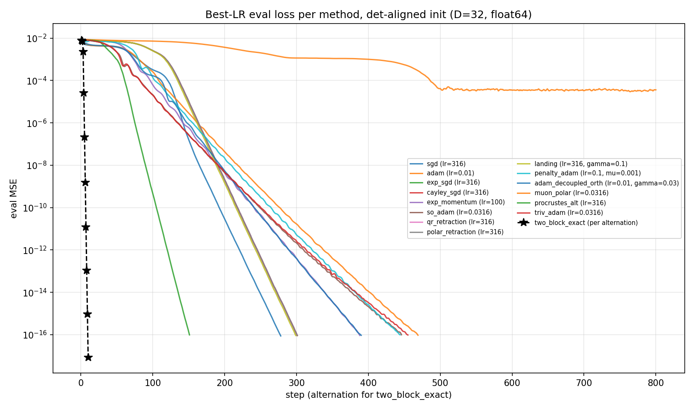
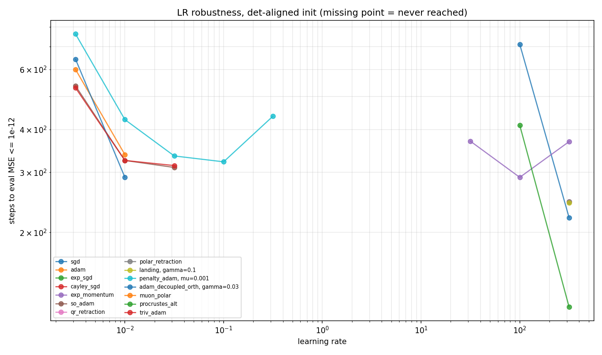
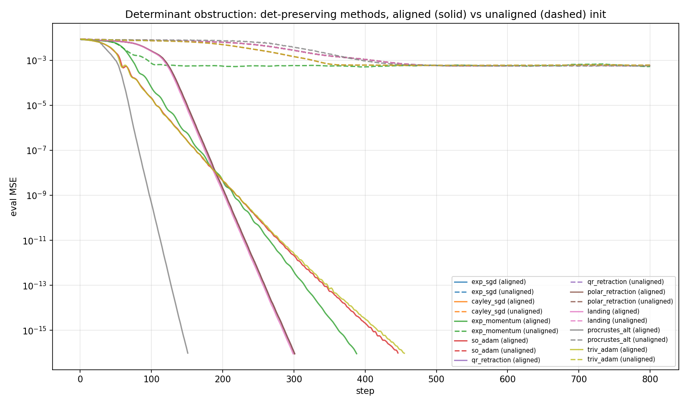
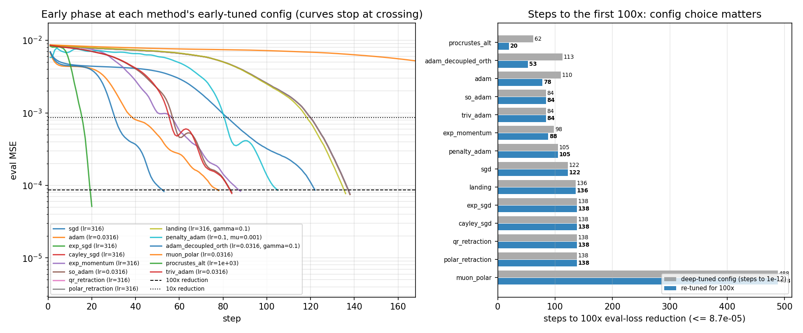

Single-layer linear attention student/teacher (D=32, N=8). Teacher and student weights
Wq, Wk, Wv are random orthogonal matrices, so the solution lies on
O(32)3. We compare 13 update rules that exploit that structure — multiplicative rotation
updates, Lie-algebra optimizers, retractions, landing, soft penalties, and closed-form Procrustes
solvers — against Euclidean SGD/Adam, with per-method learning-rate sweeps, identical inits and
data streams, float64, three seeds. Experiment: ortho_updates.py (June 2026).
Model (per linattention_solve.py): Q,K,V = X@W_q, X@W_k, X@W_v,
causal mixing out = einsum("bnd,bnde->bne", Q, cumsum(einsum("bnd,bne->bnde", K, V), 1)).
Fresh row-orthogonal batches (B=32) each step; loss is MSE against a frozen teacher; eval on a fixed
held-out set of 128 sequences. Plain Adam (lr 1e-2) is the baseline from the previous experiment.
Key structure. The map depends on the weights only through (A, Wv) with A = WqWkT; it is bilinear in (A, Wv). Two exact symmetries follow: the gauge orbit (WqR, WkR) for any orthogonal R, and the scale gauge (cA, Wv/c) for any c≠0. The metric throughout is eval MSE only — whether the student's weights end up orthogonal is not tracked; the teacher's orthogonality matters solely through the structure it gives the problem (closed-form subproblems, determinant reachability conditions).
Conventions (each verified numerically by ortho_updates.py --verify):
skew(M)=(M−MT)/2; Riemannian gradient Ω=skew(WTG) pairs with right
multiplication W←W·expm(−lr·Ω), giving descent ⟨G,ΔW⟩=−lr‖Ω‖²; the mismatched pairing silently fails
(negative control included). Landing uses the left form skew(GWT)W, which stays exactly
orthogonal to its manifold-pull term for all W, on or off the manifold.
Protocol: float64 everywhere (the 1e-15 regime is below float32 resolution); every (method, lr) run sees the same init and the same data stream; LR grids are uniform half-decade logspace; landing/penalty/decoupled also sweep their pull coefficient jointly with lr; headline metric is steps to eval MSE ≤ 1e-12; best configs re-run on seeds 43 and 44.
| method | update rule (per W, G = ∂L/∂W, Ω = skew(WTG)) | best config | steps to 1e-12 (seeds 42 / 43 / 44) |
final eval MSE* |
|---|---|---|---|---|
| two_block_exact solver | alternate: Wv ← polar(MTY) (Procrustes); A ← polar(lstsq(Φ, vec Y)); Wq ← A·Wk | B=64, no lr | 10 alternations | 8.6e-18 |
| procrustes_alt | expm steps on Wq, Wk; closed-form Procrustes Wv ← polar(MTY) each step | lr 316 | 121 / 100 / 119 | 9.8e-17 |
| sgd | W ← W − lr·G | lr 316 | 221 / 185 / 218 | 8.7e-17 |
| landing | W ← W − lr·skew(GWT)W − γ·W(WTW−I) | lr 316, γ 0.1 | 244 / 218 / 235 | 9.1e-17 |
| exp_sgd | W ← W·expm(−lr·Ω) | lr 316 | 246 / 219 / 236 | 9.1e-17 |
| cayley_sgd | W ← W·(I+lr·Ω/2)−1(I−lr·Ω/2) | lr 316 | 246 / 220 / 236 | 9.2e-17 |
| qr_retraction | W ← qf(W − lr·WΩ) | lr 316 | 246 / 220 / 236 | 9.4e-17 |
| polar_retraction | W ← polar(W − lr·WΩ) | lr 316 | 246 / 220 / 236 | 9.3e-17 |
| exp_momentum | M ← 0.9M+Ω; W ← W·expm(−clip(lr·M, θ≤0.3)) | lr 100 | 290 / 304 / 288 | 9.3e-17 |
| adam_decoupled_orth | Adam on G, then W ← W − γ·W(WTW−I) outside Adam | lr 0.01, γ 0.03 | 290 / 260 / 293 | 9.4e-17 |
| so_adam | Adam moments on Ω in so(n); W ← W·expm(−lr·m̂/(√v̂+ε)) | lr 0.0316 | 310 / 316 / 309 | 9.9e-17 |
| triv_adam | W = W0·expm(skew(A)), Adam on A, dynamic rebase at ‖·‖=0.7 | lr 0.0316 | 314 / 312 / 311 | 9.7e-17 |
| penalty_adam fragile | Adam on loss + μ·Σ‖WTW−I‖² | lr 0.1, μ 1e-3 | 322 / fail / fail | 9.9e-17 |
| adam (baseline) | plain Adam on raw entries | lr 0.01 | 338 / 319 / 362 | 9.5e-17 |
| muon_polar orbits | M ← 0.9M+G; W ← polar(W − lr·polar(M)) | lr 0.0316 | never | 3.6e-5 (floor) |
All entries: det-aligned init, best LR from the sweep, 800-step budget. *Converged runs early-stop
once eval MSE ≤ 1e-16, so ~1e-16 means "solved to float64 machine precision" — every method except muon_polar gets
there; the discriminating metric is how fast. "fail" for penalty_adam means its seed-42-tuned (lr, μ) did not reach
1e-12 on seeds 43/44 (floors at ~5e-4 / 9e-4). Unaligned-init results are in §4.
Full per-LR tables: ortho_updates_results.json.

The two biggest wins don't come from Riemannian machinery; they come from the map being bilinear in (A, Wv):
The orthogonality of Wv is exactly what makes the closed form possible: for square orthogonal W, ‖MW‖F is constant, so min‖MW−Y‖ reduces to a trace maximization solved by the polar factor.
The whole multiplicative/retraction family — expm, Cayley, QR, polar, landing — lands in a tight cluster (244–246 steps, identical across retractions to within a step) and beats Adam (338) by ~27%. The four retractions are numerically interchangeable here; pick the cheapest. But plain SGD at lr=316 reaches 1e-12 in 221 steps without any manifold machinery. On a noiseless, realizable, well-conditioned task, the on-manifold gradient direction is nearly identical to the raw gradient (the symmetric component the projection removes is small), so the projection barely changes the error trajectory. The honest conclusion: on this task, generic manifold methods ≈ well-tuned SGD.
What the rotation-aware optimizers do buy is learning-rate robustness: so_adam, triv_adam, and the angle-clipped exp_momentum tolerate 3 grid points within 2x of their best (vs 1 for the SGD-shaped methods, whose optimum sits sharply at lr≈316), because their step size is a rotation angle rather than a raw gradient scale.

O(n) has two connected components (det = ±1), and every multiplicative/retraction/trivialization update — rotations all — preserves det(W). Zero loss requires det(Wv) = det(Wv*) and det(Wq)·det(Wk) = det(Wq*)·det(Wk*); a random init satisfies both with probability only 1/4. From an unaligned init every det-preserving method floors at ~5–6e-4 at every learning rate (dashed curves below), while Euclidean SGD/Adam silently tunnel between components and converge anyway. The fix is free: flip the sign of one column of Wv (and of Wq) at init to match the teacher's det signs. Without this control, every manifold method in this comparison would have looked broken on 3 out of 4 seeds.

--verify mode checks the descent identity, slope, a negative control, the landing
decomposition, an orthogonality soak, and a block-A unit test before any sweep.The headline metric (steps to 1e-12) measures deep convergence into the noiseless optimum. If instead one only needs the loss down 100x from its initial value (init eval loss 8.66e-3 → threshold 8.66e-5 — the regime that matters when the problem isn't noiseless and exactly realizable), the leaderboard reshuffles. Each method was re-tuned for this metric: its full lr (and pull-coefficient) grid was swept again on the identical problem, init, and data stream, selecting the config by steps-to-100x (tie-break: steps-to-10x), with the grid extended upward when the optimum landed on its edge. The "deep config" column shows the same metric at the config tuned for 1e-12, for comparison:
| method | early-tuned config | steps to 10x | steps to 100x (re-tuned) | steps to 100x (deep config) |
steps to 1e-12 (deep config) |
|---|---|---|---|---|---|
| two_block_exact (solver) | B=64, no lr | 4 alt. | 4 alt. | 4 alt. | 8 alt. |
| procrustes_alt | lr 1000 | 16 | 20 | 62 | 121 |
| adam_decoupled_orth | lr 0.0316, γ 0.1 | 31 | 53 | 113 | 290 |
| adam | lr 0.0316 | 39 | 78 | 110 | 338 |
| so_adam | lr 0.0316 (same) | 57 | 84 | 84 | 310 |
| triv_adam | lr 0.0316 (same) | 56 | 84 | 84 | 314 |
| exp_momentum | lr 316 | 57 | 88 | 98 | 290 |
| penalty_adam | lr 0.1, μ 1e-3 (same) | 81 | 105 | 105 | 322 |
| sgd | lr 316 (same) | 82 | 122 | 122 | 221 |
| landing | lr 316, γ 0.1 (same) | 119 | 136 | 136 | 244 |
| exp_sgd / cayley / qr / polar | lr 316 (same) | 120 | 138 | 138 | 246 |
| muon_polar | lr 0.0316 (same) | 422 | 488 | 488 | never |
Two things stand out. First, for 10 of the 14 methods re-tuning changes nothing — their deep-convergence config is already their early-phase optimum. In particular the whole lr=316 manifold family (exp_sgd, Cayley, retractions, landing) and plain SGD keep the same lr, so their back-loaded profile is a property of the methods, not an artifact of deep tuning: no config in their grids crosses 100x sooner. The manifold members are still at ~0.3x of the init loss at step 100, cross 10x only around step 119–120, then drop extremely steeply — the large constant lr only bites once the iterate reaches the basin where huge steps are stable. muon_polar also keeps its config (488): its constant-norm steps make early speed scale with lr but its floor scale with lr², and at the next grid point up (lr 0.1, floor 4.6e-4) it cannot cross the threshold at all.
Second, where re-tuning does help, it helps a lot — and the deep-convergence ranking inverts. procrustes_alt at lr 1000 crosses 100x in 20 steps (3x faster than its deep config; lr ~3160 was tested and is worse, so this is an interior optimum) — at a config that is useless for the deep race (it plateaus at 1.5e-4). adam_decoupled_orth more than halves its crossing (113 → 53 at lr 0.0316, γ 0.1 — a config that still reaches 1e-12, in 354 steps). Plain Adam improves to 78 at lr 0.0316, but that crossing is transient: the same run later rebounds above the threshold and plateaus at 2.2e-4 — Adam at this lr passes through the 100x band rather than settling below it. The adaptive methods front-load progress; the lr=316 family back-loads it; and the closed-form Wv block again leads both races, by removing a third of the problem exactly from step 1.
Protocol: tuning runs are capped at 500 steps and stop at the 100x crossing (no deep convergence is run),
on the same teacher, det-aligned init, eval set, and data stream as the main sweep; single seed (42).
The deep-config column is read off the stored best-run curves of the main sweep. Selecting by a single
early-crossing on one seed is noisier than the deep metric — treat ~10-step differences as ties.
Numbers: ortho_initial_convergence.py → ortho_initial_convergence.json.

| method | steps to 1e-12 (unaligned) | final loss | component crossing |
|---|---|---|---|
| sgd / adam | 265 / 342 | ~9e-17 | tunnels between components |
| penalty_adam / adam_decoupled_orth | 457 / 295 | ~1e-16 | tunnels (soft constraint) |
| two_block_exact | 10 alternations | 8.6e-18 | polar projection crosses dets |
| exp_sgd, cayley, qr, polar, exp_momentum, so_adam, triv_adam, landing, procrustes_alt | never | 5.3e-4 – 6.1e-4 | blocked (det-preserving) |
procrustes_alt's Wv polar step does cross components, but its Wq/Wk rotation steps preserve the det product, which is what this seed's unaligned init violates — its floor probability over random seeds is 1/2 rather than the family's 3/4.
A companion study reads Muon's spectral-descent heuristic as worst-case forgetting control and tests it in a streaming version of this task: only 2 sequences arrive per round, each fitted aggressively. For the attention map, the spectral norms of the parameter updates bound the output change on every possible input (‖Δout‖ ≤ ‖ΔA‖₂‖Wv+ΔWv‖₂ + ‖A‖₂‖ΔWv‖₂), making Muon the steepest descent per unit of worst-case forgetting budget — the attention analogue of ‖(W+ΔW)x − Wx‖ ≤ ‖ΔW‖₂. Nine anti-forgetting techniques are compared against unconstrained fitting (spectral and Frobenius trust regions, Muon steps, Tilde's compositional Muon on the factored QK pair with its naive-factored ablation, LwF-style distillation, Gauss-Newton EWC, replay, null-space projection): a 32-sequence replay buffer wins by two orders of magnitude, average-case (Frobenius/Fisher) anchors beat the worst-case spectral family under random sources, and exact null-space protection saturates structurally. Full report: Learning without Forgetting →
uv run ortho_updates.py --verify # 8 pre-flight math checks (descent identity, negative control, ...)
uv run ortho_updates.py --smoke # 50-step smoke test of all methods
uv run ortho_updates.py # full sweep (~25 min CPU): both arms, 3 seeds, plots + JSON
uv run ortho_initial_convergence.py # Finding 5: early-phase re-tuning sweep (~6 min; runs stop at the 100x crossing)
Artifacts: ortho_loss_curves.png, ortho_lr_robustness.png,
ortho_det_obstruction.png, ortho_updates_results.json (per-LR tables and full curves),
ortho_initial_convergence.png/.json.
Methodology: every run shares the same teacher, init, eval set, and data stream; only the update rule and its
hyperparameters differ. Design and implementation were cross-checked by independent review passes; the landing
coupling bug, the penalty μ scale, and the scale-gauge artifact in the distance metric were all caught that way
and fixed before this report's numbers were produced.